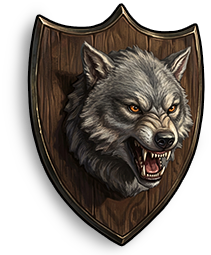

Outros
Itens · OutrosGuardião da Sanguinidade (Troféu de lobisomem)
Plethora Guardian (Werewolf Trophy)

Plethora Guardian (Werewolf Trophy) / OutrosReceita de fabricação
Receita de fabricaçãoCada fabricação produz 1 unidades. Os materiais abaixo correspondem a uma fabricação.


Produtos da reciclagem
Produtos da reciclagemDescrição do item
Um impressionante troféu de parede, lembrando a vitória sobre uma poderosa fera noturna.